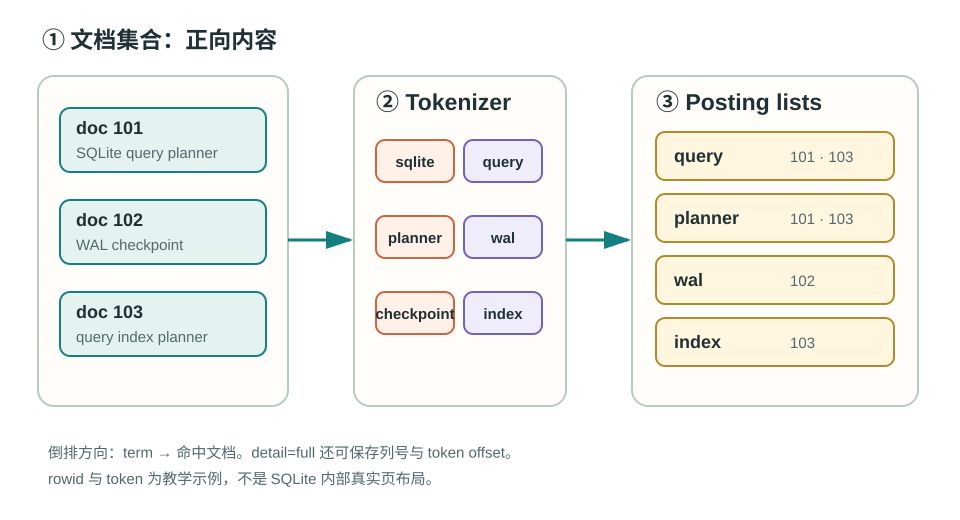
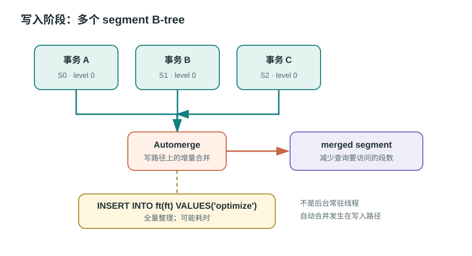
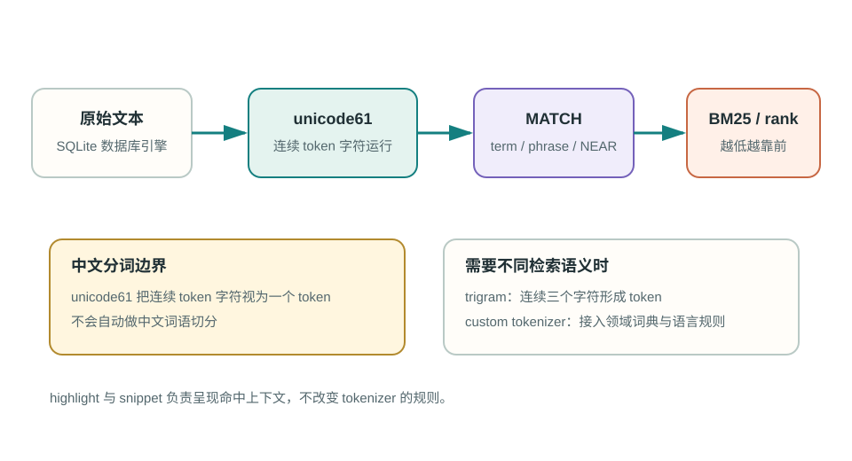

FTS5 全文搜索：Token、倒排索引与 Segment B-Tree
FTS5 把文本转换成 token，再用多个 segment B-tree 保存 posting lists；理解 tokenizer、外部内容同步、合并与 BM25，才能知道搜索结果究竟代表什么。
阅读提示：可轻点图解打开独立矢量原图；窄屏图解支持横向查看细节。
1. 为什么 LIKE '%sqlite%' 不等于全文搜索？
普通 B-tree 索引按键值顺序组织。查询 name LIKE 'sqlite%' 在合适条件下可能利用前缀范围；但 LIKE '%sqlite%' 的开头没有可定位的前缀，通常需要检查大量候选文本。全文检索要解决的不是“在字符串里找任意子串”，而是把文档拆成可检索 token，再从 token 反查文档集合。
SQLite 的 FTS5 是一个 virtual table module。它把用户写入的文档转为索引记录，查询时用 MATCH 表达短语、前缀、NEAR 和布尔组合。它不是普通表的一个附加 B-tree，也不会自动获得自然语言语义。官方 FTS5 文档区分索引、tokenizer、辅助函数与 shadow tables。

2. 一个 token 命中后，posting list 里究竟保存什么？
对每个 token，FTS5 维护命中它的文档集合。默认 detail=full 时，索引不仅要知道 rowid，还记录列号与 token offset，因此可以支持短语和 NEAR 查询，也能定位命中词在文本中的位置。把索引简化为 term → rowid 会丢失这些信息：查询仍可能判断文档包含某个词，却无法用同样的方式回答“两个词是否相邻”。
FTS5 的 detail 可选 full、column、none。后两者依次省略 offset 和列信息，可能降低存储，但同时限制短语、NEAR、列过滤或辅助函数的能力。它不是免费压缩：必须把索引体积、查询类型和 snippet()/highlight() 需求一起评估。可以用 fts5vocab 的 instance 视图观察 term、doc、col、offset。
索引内部使用 shadow tables 保存结构记录、segment 数据、文档 token 数与配置。shadow table 属于 FTS5 的实现细节，不应由应用随意直接写入；应通过虚拟表 SQL 与 FTS5 专用命令维护。
3. Segment B-tree 为什么会变多？合并究竟在哪里发生？
FTS5 并非每次写入都重写一棵完整的大索引。官方文档说明：每个新提交事务可写入一个包含本次提交内容的新 B-tree segment；查询需要访问相关 segment 并合并结果。随着写入次数增加，segment 数量变多，查询合并成本也会提高。

automerge 控制同一层级上有多少段时开始增量合并；合并工作通常分摊在后续写入操作中。达到 crisismerge 阈值时，触发写事务可能承担较重的合并工作，因此“写入突然变慢”未必是 Pager 或磁盘单独造成的。
INSERT INTO ft(ft) VALUES('optimize') 会把现有多个 B-tree 整理为一个大 B-tree，可能耗时较长。若希望把维护工作拆成多个事务，可以使用 merge 命令按页数分批推进。不要把 FTS5 合并画成后台定时任务：默认自动合并发生在修改全文索引的写语句中；显式 optimize/merge 则由应用发起。参见官方 automerge、merge 与 optimize 说明。
4. Tokenizer 决定“匹配”是什么意思
FTS5 内置 unicode61、ascii、porter 和 trigram 等 tokenizer。默认 unicode61 按 Unicode 6.1 字符类别判断 token 与 separator：连续的一段 token 字符被视为一个 token。它处理大小写和部分拉丁变音符，但不会自动调用中文词典做中文分词。

例如“SQLite 数据库引擎”在默认 unicode61 下会把连续中文字符作为一段 token，而不是自动拆成“数据库”“引擎”等语言学词语。仓库中的 examples/21_tokenizer_probe.py 用 fts5vocab 直接查看词项。若产品需要中文词语级搜索，应使用自定义 tokenizer 或在写入前用明确的分词器预处理，并保证索引和查询使用同一套规则。若需要一般子串匹配，trigram 把连续三个字符组成 token，是另一种检索语义，不等于中文词法分词。
前缀查询也有成本差异：默认主索引上的 abc* 可能需要扫描词项范围；prefix='2 3' 可建立额外的前缀索引，换取查询速度，但会增加索引写入和存储。先明确产品查询模式，再决定是否创建 prefix indexes。
5. 外部内容表、触发器与索引一致性
FTS5 可以通过 content='docs' 指向普通内容表，形成 external-content table。此时原文由 docs 保存，FTS5 主要维护全文索引；应用需要用触发器同步 INSERT、UPDATE、DELETE。若先创建内容表并填充历史行，再创建 FTS5 外部内容表，必须运行 rebuild 初始化索引，否则内容表有数据而全文索引可能为空。
CREATE VIRTUAL TABLE docs_fts USING fts5(
title, body,
content='docs', content_rowid='id',
tokenize='unicode61'
);
-- 历史内容已经存在时，用当前 content table 重建索引
INSERT INTO docs_fts(docs_fts) VALUES('rebuild');external-content 的陷阱是：FTS5 不会替应用自动维护外部表的变更。触发器漏掉 UPDATE/DELETE、旧内容传错，都会造成索引与原文不同步。官方文档还区分 contentless 与 contentless-delete 表：它们在保存原文、DELETE/UPDATE 能力和维护命令上有不同约束，不能统称为“无内容表”。
在设计阶段就决定谁是内容事实源、如何同步、如何重建、如何验证；不要等搜索结果不一致后才补触发器。对外部内容表可使用 FTS5 的 integrity-check 命令做一致性检查。
6. BM25、rank 与可复现实验
全文搜索返回的是候选集合，排序需要额外的评分函数。FTS5 内置 bm25()，并提供隐藏列 rank；默认情况下 rank 与无额外参数的 bm25 评分相同。一个容易忽略的方向是：BM25 数值越低，匹配排序越靠前。在排序时使用 ORDER BY rank 通常比直接把辅助函数写在 ORDER BY 中更高效，尤其是有 LIMIT 或提前停止读取时。
SELECT d.id, d.title,
snippet(docs_fts, 1, '<b>', '</b>', '…', 10) AS excerpt,
bm25(docs_fts) AS score
FROM docs_fts JOIN docs AS d ON d.id = docs_fts.rowid
WHERE docs_fts MATCH 'planner OR wal'
ORDER BY rank LIMIT 10;
CREATE VIRTUAL TABLE docs_vocab
USING fts5vocab(docs_fts, 'instance');运行 examples/21_fts5.sql 可以练习外部内容同步、MATCH、snippet、词项视图和 optimize；运行 examples/21_tokenizer_probe.py 可以验证本机 SQLite 的 tokenizer 行为。实验输出只描述当前 SQLite 构建，不代表所有应用都编译了 FTS5。
设计一次真实的全文检索决策
- 列出产品要支持的是完整词项、短语、前缀还是任意子串；
- 对目标语言检查默认 tokenizer 的实际 token 流；
- 确定内容表是否外置，并为每种写操作设计同步测试；
- 用真实文档长度分布评估 detail、prefix 和 ranking 的成本。
自测：为什么 optimize 不应该放进每次写入的触发器？
optimize 会整理所有现有 segment，可能执行大量工作；把它放进每次写入会把维护成本放大到用户事务的关键路径。应由维护策略按数据规模和写入节奏决定。
官方资料与版本边界
涉及源码内部符号时，以 SQLite 3.54.1 源码快照为定位基准；公开文档用于解释稳定接口和语义。内部函数、行号和构建配置会随版本变化。
- FTS5 Extension · SQLite 官方文档或版本化源码
- FTS3 / FTS4 · SQLite 官方文档或版本化源码
- Virtual Table Mechanism · SQLite 官方文档或版本化源码
- FTS5 Data Structures · SQLite 官方文档或版本化源码